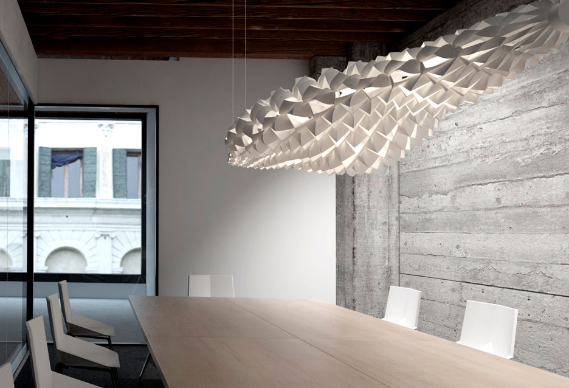
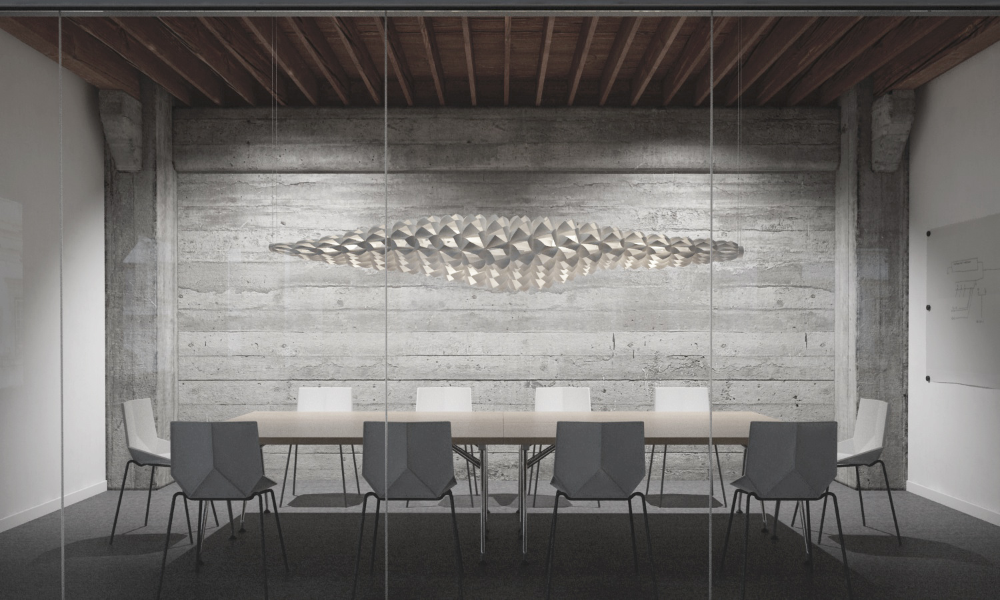

Parametric lamp design
2015
The lamp is the product of an integral design process that combines computer science,
mathematics, material performance and fabrication.
Inspired by dragon skin, the design attempts
to engage the morphology and behavior of a biological organism through parametric modeling and material.
The luminaire is a modular partition system made from aluminum and paper cut into a square and triangular pattern.
Paper material create airy feeling and allows to reduce production cost.

